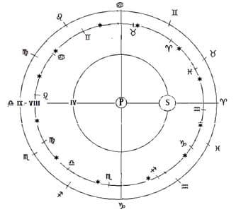
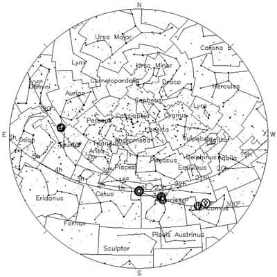

Aducem la cunoștința cititorilor noștri tâlcuirea acestui canon, așa cum a fost făcută în
Pentru început redăm acest canon legat de prăznuirea Sfintelor Paști și tâlcuirea lui așa cum sunt prezentate în Pidalionul de la Neamț 1844, o traducere a Pidalionului Sfântului Nicodim Aghioritul:
„Dacă vreun episcop, ori presbiter, ori diacon, sfânta zi a Paștilor mai-nainte de primăvăreasca isimerie cu iudeii o va săvârși, să se caterisească. [Apos: 70, 71; Sobor 6: 11; Anti: 1; Laod: 37, 38; Cart: 60, 81, 117]”
Pentru aflarea Pashăi (Paștilor), îndreptare prea alese, și care nu puteau a se face mai bune, zice Mathei Vlastar, au așezat și au dat Sfântul și de toată lumea Soborul 1, după Canonul 1, al Soborului din Antiohia. Care în Canoanele Soborului 1, nu se află. Dar precum și la Mathei Vlastaris, și în sfintele Evanghelii tipărite, și în alte cărți multe. Deci pe amărunțita (amănunțita) cunoștință a Pascaliei aceștia noi lăsând a o învăța deosebit și chiar pascaliocuvântătorii noștri, atâta numai zicem la aceasta subînsemnare, cum că patru oarecare de nevoie se caută pentru Paștile noastre: (1) Că Paștile trebuie a se face totdeauna după echinocțiu de primăvară, (2) Că nu se cade a se face întru aceeași zi, cu legiuitele paști ale iudeilor (care amândouă acestea să hotărăsc de acest al 7-lea Apostolesc Canon) (3) Ca să nu se facă chiar și nehotărât după echinocțiu, ci după cea întâi lună plină a lui martie, care se va întâmpla după echinocțiu. (4) Ca să se facă în întâia duminică ce se va întâmpla după luna plină (iar aceste două din predanie le avem, și nu din Canon). Drept aceea ca să se păzească câte patru rânduirile acestea deopotrivă în toată lumea, și să prăznuiască creștinii întru aceeași vreme, și întru aceeași zi Sfintele Paști, și să nu aibă trebuință în fiecare an de astronomi, și de Soboare, au tocmit de Dumnezeu înțelepțiții Părinți dreptarul cel pentru Paști. Dar înseamnă că pentru nerânduiala [grecește anomalia] mișcării Lunii, nu se păzește a patra rânduire totdeauna, ci câteodată se calcă. Fiindcă după același Vlastar, după 300 de ani, cu două zile după întâia plinălunie (lună plină) urmează a se face legiuitele Paști, în zi de duminică. Iar aceste două zile, care prisosesc din nerânduiala aceasta, adăugându-se, trec uneori peste duminica 1 care se întâmplă după plinalunie (luna plină) a lui martie, în care duminică noi prăznuim Stâlpările, și în cea viitoare facem Paștile. Iar din această puțină călcare, nici o abatere din blagocestie, nici ceva necuviincios, ori primejdie sufletească nu urmează. Pentru aceasta și dumnezeiescul Hrisostom (în Cuvântul cel către cei ce postesc la Paștile cele dintâi) zice: Scumpătatea timpului, și pândire a zilelor Biserica lui Hristos nu știe. Fiindcă de câte ori mănâncă Pâinea aceasta de viață făcătoare, și bea Paharul acesta, vestește moartea Domnului. Și Paști săvârșești: ci fiindcă la Soborul întâi s-au adunat Părinții și au rânduit când să se facă Paștile, cinstind Biserica pretutindenea pe învoire și pe unire, au primit rânduiala care ei au făcut…
Că trebuie să știe ei că și Soboarele cele de toată lumea, care s-au făcut după cel întâi, și ceilalți Părinți, vedeau cu adevărat și ei, ca niște înțelepți ce erau, că mult s-au pogorât echinocțiul. Dar încă n-au voit a o strămuta din 21 martie, unde o au găsit Soborul 1. Cinstind mai mult pe învoirea și unirea Bisericii, decât pe amărunțimea echinocțiului, care nu pricinuiește, nici la aflarea Paștilor noastre o tulburare, nici vătămare blagocestie. Iar mai ales că amărunțimea aceasta și pricinuiește latinilor, două necuviințe mari, adică, a prăznui ei paștile, ori cu iudeii, care este împotriva acestui Apostolesc Canon, ori mai înainte de iudei. Și cum că mai mult place lui Dumnezeu rânduiala Pascaliei, și în scurt a zice, a Calendarului nostru, de cât rânduiala Pascaliei și a calendarului latinilor, este văzut din minunile ce au arătat și arătă până acum pentru aceasta. Căci în părțile Heliopolis cei din Egipt, unde sunt piramidele cele două mari, în fieștecare an lucrează Dumnezeu minune ca aceasta: Adică, în seara Joii cei mari a noastre (nu a latinilor) pământul varsă moaște și oase vechi de oameni. De care să umple un câmp lat, care stau până în Joia înălțării, și atuncea se ascund și nicidecum se văd, până iarăși în Joia cea mare. Aceasta nu este vreo basnă [basm], ci adevărat lucru, și mărturisit de istoricii vechi și noi, iar mai ales de Gheorghie Coresie Hiotul, și de pururea pomenitul Nectarie Patriarhul Ierusalimului, care în hronograful arabicesc îl povestește fila 266 și cu ochii săi l-a văzut, precum din cele ce zice mai jos se vede. (Iar oasele acestea omenești mai înainte vestesc, învierea morților ce va să fie, precum le-a văzut și Proorocul Iezechiel.) Dar scrie și pomenita Coresie, că Paștile scria către Papa Leon (precum se arată în Epistola 63 a lui Leon) cum că prăznuind oarecând Paștile, răsăritenii în 22 a lui aprilie, iar apusenii în 25 a lui martie, un izvor de apă fiind uscat mai înainte, s-a umplut de apă în 22 a lui aprilie, la Paștile noastre, și nu la al latinilor. Vezi pe Dosithei cartea 12 pentru Patriarhii cei ai Ierusalimului care povestește de o minune ce s-a făcut la Beligrad, adeveritoare calendarului nostru, și surpătoare calendarului latin, pe care o a văzut un Paisie Patriarh al Ierusalimului, un aluat ce s-a plămădit de o latincă în ziua Proorocului Ilie, s-a prefăcut în piatră ușoară, numită Chisira.
Două echinocții face soarele în an, adică una, în timpul primăverii, iar alta în timpul toamnei. Și să zic echinocții (isimerii), fiindcă atunci întocmai este ziua cu noaptea, și dimpotrivă, noaptea cu ziua. Și echinocțiul de toamnă (tomnateca isimerie), se face în luna septembrie, când soarele intră în prima miră a zodiei ce se cheamă Cumpănă. Nu acei în stele și simțite, ci acei fără de stele și gândite. Iar echinocțiul de primăvară (cea primăvărească isimerie), se face în luna martie, când soarele intră în prima miră a zodiei ce se cheamă Berbec, nu acelui simțit și în stele, a celui ce este schimbăcios, ci a celui gândit și fără stele ce este neschimbăcios după astronomi. Deci echinocțiul de primăvară, pentru nepotrivirea a însăși mișcării soarelui de la apusuri către răsărituri, nu se face totdeauna întru una și aceeași zi, ci în vremea Sfinților Apostoli, era în 22 a lui martie, după rânduiala acelorași Apostoli (Cartea 5, cap 17) ori după alții în 23. Iar în timpul primului Sobor a toată lumea, era în 21 martie, după Sevastos și alții… Acestea așa mai înainte fiind cunoscute, Canonul acesta apostolesc rânduiește, căci care episcop, ori presbiter, ori diacon, ar prăznui Sfintele Paști mai înainte de echinocțiu de primăvară, împreună cu legii paștile iudeilor, să se caterisească. (Fiindcă din iudei, cei mai înțelepți, păzeau să prăznuiască după echinocțiu paștile, după Vlastar, precum a rânduit Moise aceasta. Iar cei mai țărănoși, o prăznuiau înainte de echinocțiu, după cum arată Canonul acesta, și după urmare de două ori întru același an prăznuiau Paștile; precum aceasta înseamnă Epistolia împăratului Constantin, ca pentru Paști, ce se află în cartea 1 a Istoriei lui Teodorit, capitolul al 10-lea și al 9-lea cum zic alții. Dar când să se săvârșească aceasta? După echinocțiu și după Paștile legii. După echinocțiu, căci echinocțiul fiind măsură despărțitoare a unui an deplin, dacă înaintea echinocțiului vom prăznui, facem de două ori Paștile întru același an, și după urmare de două ori însemnăm moartea Fiului lui Dumnezeu. Iar de o vom prăznui după echinocțiu, numai un Paști facem în an, și prin urmare o moarte a lui Hristos vestim. Pentru aceea și însuși Apostolii în așezământurile lor (cartea 5, cap 17) acestea zic. „Se cade voi fraților zilele Paștilor cu scumpătate a le face, cu toată sârguința, după schimbarea echinocțiului, ca nu de două ori în an, a unei pătimiri să faceți pomenire, ci odată în an, aceluia ce odată a murit. Și iarăși după paștile iudeilor, întâi, ca înainte să fie închipuirea, adică junghierea Mielului, și apoi să urmeze ceea ce se închipuia, adică Moartea Domnului și Învierea.” Încă și alta, ca să nu o prăznuim în altă zi a săptămânii, precum prăznuiesc iudeii, în oricare zi se întâmplă 14 a lunii, ci totdeauna duminică, precum și aceasta, în același loc Apostolii o zic. Că pentru aceasta și câteodată când se întâmplă a fi legiuitele paști [ale iudeilor] în zi de duminică, noi nu prăznuim întru aceeași Paști, ci în viitoarea duminică, ca să nu prăznuim împreună cu iudeii. Fiindcă și după însuși adevărul lucrurilor, atunci întâi iudeii paștile lor au prăznuit, și apoi Învierea Domnului s-a făcut, al cărui chip și aducerea aminte aduc Paștile care pe tot anul acum noi le prăznuim.”
În decursul vremii s-a așternut uitarea peste aspectele astrologiei bisericești, iar pentru marea majoritate dintre noi teologii, și chiar monahii, pasajul respectiv din tâlcuire rămâne o enigmă de nedezlegat. Redăm mai jos niște lămuriri elementare de astro/logie/nomie patristică pentru a ajuta la clarificarea înțelegerii acestui pasaj:

Există două zodiace, cel tropical și sideral. Soarele se află pe cerul al 4-lea (de la pământ), zodiacul sideral (cel cu zodiile-constelații, „cel simțit”), este cerul al 8-lea, iar cel tropical, fără stele („gândit”), este cerul al 9-lea. După cum se vede în diagrama de mai sus, în decursul celor 7517 ani de la facerea lumii (2009), cele două zodiace s-au decalat astfel încât în zilele noastre echinocțiul de primăvară se petrece în zodia „simțită” (siderală) Pești, spre sfârșitul ei.
Zodiacul sideral („simțit”) și cel tropical („gândit”)
Anul 7517 (2009): Echinocțiul de primăvară „simțit”(la sfârșitul zodiei Pești);
Echinocțiul de primăvară „gândit” (Berbec, gradul 1)
Există două zodiace, cel tropical și sideral. Soarele se află pe cerul al 4-lea, zodiacul sideral (cel cu zodiile-constelații, „cel simțit”), este cerul al 8-lea, iar cel tropical, fără stele („gândit”), este cerul al 9-lea.
Și pentru că în zilele noastre cei mai mulți oameni, fie ei credincioși chiar practicanți, au nevoie ca de aer și de o confirmare din partea autorității științifice, le oferim aici un element care va fi pentru mulți șocant: o hartă astronomică actuală (obținută prin programul Home Planet – hp – ce se poate descărca gratuit de pe internet) a echinocțiului de primăvară:

Situația cerului la data de 21 martie 2006, privit din București, ora locală 12:24. A se observa poziția soarelui, aflat în centrul diagramei în zodia Peștilor (Pisces, pe diagramă între 0° – 30°), și foarte aproape de zodia Vărsătorului (Aquarius, pe diagramă între (0°) 360° – 330°)
Cele două diagrame sunt practic similare!
Cum se explică oare această concordanță? Să lămurim mai întâi că, din punctul nostru de vedere această confirmare științifică nu are prea mare relevanță, deoarece destul ne sunt mărturiile Scripturii și ale Tradiției. Dar ca această Tradiție să fie într-adevăr Tradiție, ea trebuie predată din generație în generație, ori vedem cu multă îngrijorare că de vreo 200 de ani încoace transmiterea acestor elemente de cosmologie și astro-nomie/logie patristică s-a diminuat la extrem. Și atunci trebuie depuse toate eforturile de recuperare a lor, ceea ce, cu mila și ajutorul lui Dumnezeu încercăm pe parcursul acestei lucrări.
Pentru obținerea hărții astronomice de mai sus s-au folosit observațiile astronomice și un program modern de calculator. Dar cum s-a ajuns la harta zodiacală de mai sus?
Potrivit revelației tradiționale cosmologice redată cel mai limpede de către Matei Vlastare, în prima săptămână a facerii lucrurile au stat în felul următor: în zilele I-VI echinocțiu prelungit de primăvară. Acum, dacă s-ar fi inventat și aplicat calendarul iulian din prima zi, lucrurile ar fi stat în felul următor:
Ziua I 18 martie…
Ziua IV 21 martie, apariția luminătorilor, echinocțiu de primăvară aflat în zodia Berbec siderală (simțită), care corespunde identic acum cu cea tropicală (gândită), gradul 1.
Ziua VI 23 martie, crearea omului. Practic, aceeași configurație astrală!
Începând cu ziua a VIII-a (duminică 25 martie), mișcările astrale sunt cele cunoscute. În acest caz, ținând cont de rata de 1 zi la 300 de ani rezultă că în timp de 7515 ani s-a întârziat cu 7515 : 300 adică 25 de zile și aprox. 3 minute (2 minute 24 s.). Această întârziere se reflectă în poziția astrologică pe care tocmai am studiat-o. Dar, este tare greu de crezut că astronomii științifici ar accepta această explicație. Pentru aceasta ei ar trebui să revizuiască radical și din temelii tot sistemul lor de mișcări și poziții astrale, și să revină la sistemul cosmologic tradițional. Aici de exemplu se vorbește de „ciclurile” soarelui și ale lunii, iar ciclu înseamnă o rotație completă, deci un clar sistem geocentric.
Odată lămurită situația zodiacului „gândit”, vedem că se mai ivește și problema datării echinocțiului respectiv, și anume: poate fi această dată la rândul ei gândită și neschimbătoare? Se poate ea fixa la un moment dat, să zicem 21 martie? Ar trebui făcut acest lucru sau nu?
Exact la acest moment face aluzie tâlcuirea Pidalionului. Întrucât acesta s-a redactat la sfârșitul sec. al XVIII-lea, părinții atoniți dau aici o tâlcuire apologetică și polemică, ca răspuns la provocările și presiunile romano-catolice.
Ca răspuns decisiv și final al acestor pretenții, Părinții aghioriți introduc noțiunea de „echinocțiu gândit”, deosebit clar de cel simțit, ceea ce conduce la consecința că, pentru calendarul liturgic bisericesc criteriul de fixare a datei de 21 martie nu este legat de fenomenele astronomice/astrologice văzute, ci cele gândite. Și atunci, desigur că Biserica Ortodoxă a acceptat o decalare ce va crește în decursul timpului (precesia echinocțiilor), fără ca să implice o călcare a hotărârilor pascale.
În primul rând: Paștele va avea totdeauna loc și după echinocțiul simțit, sideral, astronomic, de care se depărtează treptat înspre vară, ș.a.m.d. Pentru cei ce au invocat anomalia că Paștele va avea loc odată cu Crăciunul, în toiul iernii, precizăm că aceasta ar avea loc – teoretic, ipotetic – în cazul ratei patristice/ptolemeice de 1/300 z (1 zi la 300 de ani), peste aproximativ… 70 000 de ani! Chiar crede cineva cu trezvie duhovnicească, că lumea va mai dura atâta? Și chiar și în această ipoteză absurdă, Paștele se sărbătorește tot după echinocțiul de primăvară, și nu înainte!
Și totuși, de ce a fost legată fixarea datei de 21 martie ca termen al echinocțiului de primăvară, ceea ce a dus la cea mai devreme dată posibilă a Paștelor 22 martie? De ce au fixat Părinții de la Niceea această dată la Sinodul din 325? E posibil ca gregorienii să aibă totuși dreptate în cramponarea lor pentru fixarea echinocțiului la 21 martie?
Pentru a afla răspunsurile la aceste întrebări, revenim la datele săptămânii creației furnizate de către pascaliograful și canonistul normativ Matei Vlastare (sec. XIV):
| Ziua I | duminică 18 martie; |
| Ziua II | luni 19 martie; |
| Ziua III | marți 20 martie; |
| Ziua IV | miercuri 21 martie, apariția luminătorilor, echinocțiu de primăvară |
– Soarele se află în zodia Berbec siderală (simțită), care corespunde identic acum cu cea tropicală (gândită), gradul 1.
– Luna plină
Vedem acum limpede că Părinții niceeni au avut în minte, insuflați fiind de Duhul Sfânt, această configurație din prima săptămână a facerii lumii. Întrucât evenimentele iconomiei mântuirii noastre au fost lucrate de către Domnul în strânsă concordanță cu cele de la facerea lumii (răstignirea de vineri, la ceasul 6, după echinocțiul de primăvară, la lună plină), era logic ca și calcularea pascaliei să țină cont de toți acești factori cerești. Dar, acest lucru nu le dă nicidecum dreptate „astronomilor atei ai papii”, cum au fost numiți în epocă de către ortodocși reformatorii gregorieni, și aceasta din motivul arătat mai sus: configurația cerească potrivit căreia cele două zodiace, „simțit” și „gândit” au coincis nu se mai regăsește de atunci (ziua a 4-a, miercuri 21 martie, anul 1), ci s-a produs decalajul arătat.
Chiar dacă Părinții ar fi stabilit („fixat” cum se mai spune pe alocuri…) ca data echinocțiului de primăvară să fie 21 martie, să fie clar pentru toată lumea: atunci soarele nu se mai afla deja în gradul 1 al Berbecului.
Anul 325 d.Hr. = 5 833 d.f.l. (5508 + 325). Împărțind această sumă la rata de 1 zi la 300 de ani obținem: 5833:300»19 zile, adică »19 grade (dăm cifre rotunjite și aproximative, deoarece aici nu interesează precizia ci sensul și esența calculării). Deci, admițând că o zodie are »30°, atunci în vremea Sinodului I Ecumenic soarele se găsea în timpul echinocțiului de primăvară » în gradul 11… Pești al zodiacului „simțit”! Acest lucru este cunoscut sub numele de „precesia echinocțială” și este un fenomen ceresc natural schimbător ce nu poate fi modificat decât de către Dumnezeu. În schimb, se poate fixa o dată oarecum abstractă, dar mai bine spus „gândită” a zodiacului cu un Berbec fixat la data dorită de noi, în acest caz 21 martie. Sau, altfel spus, Berbecul „gândit” poate începe totdeauna odată cu echinocțiul de primăvară. La această constantă s-au referit tâlcuitorii Canonului când au spus că „soarele intră în prima miră a zodiei ce se cheamă Berbec, nu acelui simțit și în stele, a celui ce este schimbăcios, ci a celui gândit și fără stele ce este neschimbăcios după astronomi.” Exact aici s-a strecurat confuzia gregorienilor ce au confundat cu voie sau fără voie, cu știință sau din neștiință (nu putem ști cu absolută siguranță care au fost situațiile din sufletele diferiților astronomi) aceste două zodiace diferite. Această contopire a lor are caracterul ereziei monofizitismului: absorbirea și dizolvarea unui element în altul distinct. Erezia dă naștere la eroarea de a considera fix ceea ce este prin natură schimbător, aici zodiacul „simțit”, și prin aceasta a impune o pascalie antipatristică ce își propune realizarea acestui deziderat: „Corectăm ducând nu numai echinocțiul vernal pe locul lui de început conform Conciliului niceean, care azi cu zece zile dat-a înapoi,… dar instituim și un sistem metodic și rațional pentru posteritate, care să împiedice echinocțiul și luna plină a se depărta de propriile sedii.” (Bula Inter gravissimas 1582)
Nu am vrea să încheiem această secțiune înainte de a arăta ce importanță are datarea de mai sus în iconomia mântuirii noastre așa cum a binevoit Dumnezeu să o lucreze. Și anume, dacă ziua I a creației a fost duminică 18 martie, atunci rezultă că cea de-a VIII-a fost duminică 25 martie. Ziua a opta are un simbolism cu totul aparte, de care nu ne vom ocupa pe larg acum, din care reținem că ar fi o nouă creație, eon, eshaton, chiar și semnul ∞ (infinit). Oare întâmplător a avut loc întruparea Domnului (Bunavestire) în această dată? Desigur că în nici un caz, ci cu totul legat de acea zi a opta. Iarăși, tot într-o zi de duminică 25 martie a avut loc Învierea! Această coincidență a celor două praznice se cheamă „Paștele Domnesc” („Kirio Pasca”), și din păcate a dispărut din tipicul calendarului „pe nou”…
Și așa stând lucrurile, vedem acum și legătura cu nașterea Domnului, 25 decembrie, la rândul ei o dată nicidecum convențională sau legată simbolic de solstițiul de iarnă, așa cum se socotește îndeobște. Nu, ci legăturile s-au făcut în felul de mai sus, din care a rezultat și o a treia dată legată de nașterea Sfântului Ioan Botezătorul: 24 iunie. Vedem acum clar că nu de solstiții și echinocții astronomice au fost legate aceste evenimente și ulterior praznice, și cu atât mai puțin de înlocuirea unor prăznuiri păgâne ale cultului soarelui sau cine știe ce idolatrii, ci de aceste date. Drept este că peste ele s-a așternut oarecum uitarea, dar, să recunoaștem cu durere, și nepăsarea cea păcătoasă, delăsarea. Acum prin pronia divină cele uitate se regăsesc și suntem încredințați că vor aduce roade duhovnicești în sufletele evlavioase ale celor ce nu se vor mai prici dacă „sunt sau nu dogme, cine le-a dat, unde…. cum…”, ci le vor primi cu bucurie și recunoștință.
Vedem deci, că și la momentul Pidalionului (1800), este anihilat pur și simplu atât punctul de vedere „științific” al observațiilor astronomice variabile cât și metoda gregoriană de fixare perpetuă a echinocțiului „simțit” la data de 21 martie…
Pascalia Ortodoxă este stabilită pentru totdeauna după criteriile patristice lămurite cum am văzut de către Matei Vlastare și Sfântul Nicodim Aghioritul, și nu necesită nici o modificare, fie în sensul gregorienilor, fie în sensul vreunei reforme ortodoxe.
Pe aceeași linie au mers și patriarhii Constantinopolului Calinic XI, Paisie II, Chiril V și patriarhul Atanasie al Antiohiei. În 1827, Agatanghel, Patriarhul Ecumenic, a refuzat să permită orice îndreptare a așa-numitului calendar praznical „iulian” ortodox.
Anatemizarea calendarului gregorian a fost insuflată acelor Părinți de către Duhul Sfânt, ce nu a primit această „îndreptare”. Efectul benefic și salvator al acesteia s-a manifestat în spațiul ortodox pe durata 1583-1924, adică 340 de ani.
Împotriva modalităților inovatoare și alternative de toate felurile, Biserica Ortodoxă a elaborat și folosit tabele și metode așa numite „perpetue” care să nu mai necesite observații anuale și rectificări permanente ale pascaliei. Dintre ele amintim așa numitele „Mâna anului” și „Mâna Sfântului Ioan Damaschin”, un fel de abac, ce asigura pe veci un mod de calculare a Paștelor.
Aceste elemente pascaliografice erau tipărite în cărțile de cult, cum ar fi fost ceasloavele. Și dacă nu erau cunoscute integral preoților și credincioșilor, erau în tot cazul accesibile. Astăzi ele au căzut într-un fel de desuetudine, considerându-se cumva că sunt exclusiv de competența astronomiei. Părinților și fraților, nu a fost și nu este așa, să nu lăsăm din mână comoara predaniei! Mersul cerului a fost stabilit și descoperit de Însuși Dumnezeu, și cine s-ar putea face mai vrednic de aceste descoperiri decât Biserica și slujitorii ei?